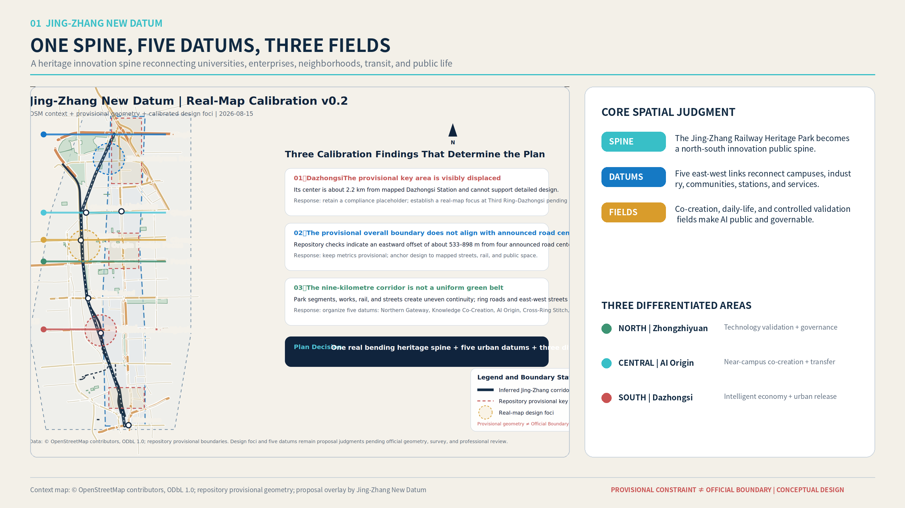
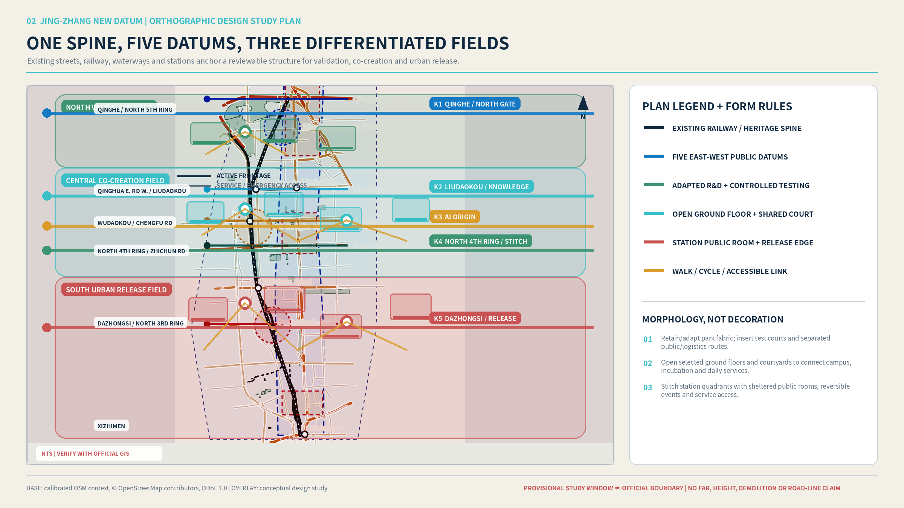
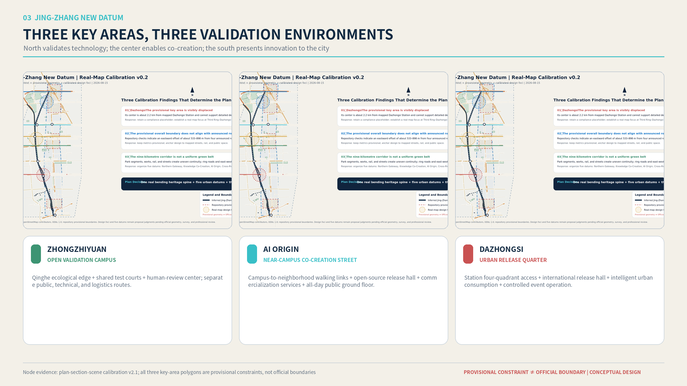
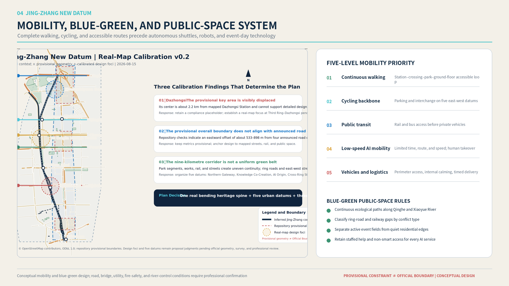
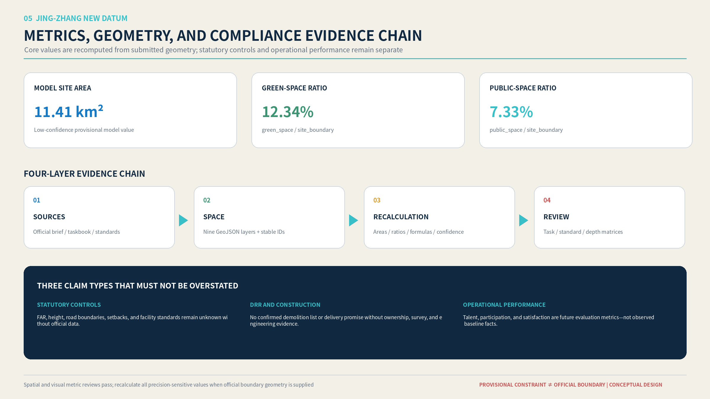

Jing-Zhang New Datum: Centennial Jing-Zhang AI Innovation Belt
A heritage innovation spine, five east-west urban datums, and three AI-enabled public fields reconnect universities, enterprises, neighborhoods, transit, and cultural assets across Haidian.
Jing-Zhang New Datum: Centennial Jing-Zhang AI Innovation Belt
Design Basis and Source List
This proposal responds to the official announcement for the Centennial Jing-Zhang AI Innovation Belt Open Call for Urban Design and the rights-cleared Agent taskbook. It uses the site package, source registry, professional standards, provisional geometry, and processed reading guides as separate evidence classes. Official text supports the project name, three-level scope, approximate area values, and required tasks. Repository provisional geometry supports temporary generation, visualization, and recalculation only; it does not constitute an Official Boundary, Official Planning Boundary, statutory control, or approval basis Source Source.
The design therefore distinguishes official facts, public background, provisional constraints, design proposals, and unknown controls. Every spatial claim is connected to a source, geometry layer, metric, assumption, or professional depth item. Missing official boundary, parcel, ownership, Regulatory Detailed Planning, municipal, fire-safety, and heritage-control data are not filled with invented precision. They remain explicit preconditions for professional development Source Depth.

Three-Level Scope Framework
The Coordinated Research Area addresses the 43.6-square-kilometre innovation ecology and future-city proposition. The Overall Design Area addresses approximately 11.4 square kilometres around the Jing-Zhang Railway Heritage Park, translating the strategic proposition into urban renewal, mobility, public space, industry, and infrastructure systems. The Key-Area Detailed Design Area covers the three named focus areas—Zhongzhiyuan, Beijing AI Origin Community, and Dazhongsi—with an announced total of 368.4 hectares. Exact polygons remain unavailable, so submitted geometry is a provisional constraint and every precision-sensitive value must be recalculated when organizer-supplied official geometry becomes available Spatial data Spatial data Metric.
The three scopes operate as one decision chain. Regional industry and talent choices determine the spatial carriers required in the Overall Design Area; the three key areas then test whether those carriers can become credible plans, sections, public interfaces, operations, and measurable outcomes. The adopted structure is One Spine, Five Datums, Three Fields: one north-south heritage innovation public spine, five east-west urban datums, and three types of AI-enabled public fields Depth Depth.

Coordinated Research Area: Industry and Future City Research
Haidian already concentrates universities, research institutes, platform enterprises, start-ups, investors, professional services, and highly mobile talent. The proposal does not treat these assets as a list. It organizes a spatial innovation cycle: fundamental research and open-source collaboration; prototype and model validation; enterprise incubation and professional services; public demonstration and urban application; international exchange and rule-making. The Zhongguancun Technology Services Wing supports capital, intellectual property, legal, and global resource allocation, while the Xiaoyue River Scenario Enablement Wing supports AI-enabled mobility, public service, and urban-life testing Source Standard.
The future-city hypothesis is that an AI district should not be defined by screens, robots, or a technology-themed skyline. It should be defined by whether knowledge, people, services, and public space can cross institutional boundaries safely and conveniently. AI must become visible as a public capability with clear human review, accessibility, data minimization, and fallback service. The “New Datum” is therefore both a spatial structure and a six-part evaluation method: walking continuity, open ground floors, all-day use, cultural legibility, public value, and human-review capacity.
Overall Design Area: Urban Renewal and Regulatory-Plan-Level Urban Design
The Jing-Zhang Railway Heritage Park becomes the innovation public spine rather than a residual linear green strip. Five east-west datums reconnect the fragmented urban fabric: the Northern Gateway Datum links Qinghe, Zhongzhiyuan, and the Fifth Ring Road; the Academy Co-Creation Datum connects campuses and research institutes; the AI Origin Datum links Wudaokou, university neighborhoods, and commercialization services; the Jimen Community Datum integrates education, health, and everyday public services; and the Dazhongsi Urban Release Datum links the transit station, four quadrants, public demonstration, and international exchange.
Three morphology prototypes translate the industry cycle into urban form. The Open Validation Campus adapts existing research-park fabric through shared test courts, controlled logistics, a public observation edge, and a Qinghe ecological interface. The Near-Campus Co-Creation Street uses smaller blocks, dense walking routes, open ground floors, shared courtyards, affordable collaboration spaces, and mixed daily services. The Urban Release Quarter uses transit integration, continuous pedestrian frontage, flexible event rooms, public living rooms, and all-day commercial and cultural programs. These are conceptual urban-design recommendations; Floor Area Ratio, Building Height, road boundaries, setbacks, ownership, and Demolish–Renovate–Retain decisions remain pending official data Spatial data Depth Depth.
Detailed Design of Key Areas
The Zhongzhiyuan AI Independent Innovation Acceleration Area is designed as an Open Validation Campus. Its primary spatial move is a sequence from the Qinghe ecological edge to a public innovation lobby, shared testing courts, controlled technical zones, and a human-review center. Public visitors, researchers, equipment logistics, and emergency access use legible but different paths. Its identity comes from credible testing, safety governance, low-carbon infrastructure, and visible professional review rather than monumental form Spatial data.
The Beijing AI Origin Community becomes a Near-Campus Co-Creation Street. The proposal reconnects campus gates, neighborhoods, incubators, transit, and the heritage park through a fine-grained walking network. Open-source release rooms, flexible workspaces, intellectual-property and investment services, affordable food, housing support, and night-time study spaces occupy a continuous public ground floor. The key test is whether a student, researcher, resident, or start-up can move through the district without crossing a sequence of closed compounds Spatial data.
The Dazhongsi AI Industry Cluster becomes an Urban Release Quarter. Transit-station integration and four-quadrant pedestrian continuity precede architectural spectacle. An international presentation hall, enterprise demonstration spaces, AI-enabled retail and cultural programs, and a public event street create an urban interface for intelligent agents, terminals, content, and data-service enterprises. The provisional repository focus area is visibly displaced from mapped Dazhongsi station context, so the design uses a geographically anchored study window and awaits official polygon confirmation Spatial data Depth.

AI Innovation Ecosystem, Personas, and AI+ Scenarios
Five design personas test the proposal across a full day: university researchers and student developers; start-up teams; major-enterprise and international visitors; residents and families; and older or mobility-impaired users. These are design-validation roles, not profiles derived from tracked individuals or a completed public survey. Each persona tests arrival, work, collaboration, services, recreation, night-time safety, accessibility, and the availability of a non-digital alternative.
Ten local scenario cards are linked to the six standard scenario IDs. They cover an open-source release hall, trustworthy-agent sandbox, edge-computing service station, AI walking guidance, Dazhongsi international release hall, Qinghe low-carbon innovation corridor, near-campus commercialization street, data-governance living room, AI daily-service street, and a Global AI Public Life Week route. Every card states its user, time, spatial carrier, minimum necessary data, public value, risk, human reviewer, and fallback mode Standard Spatial data.
Three Testing and Validation Scenarios provide deeper implementation logic. T1 is a trustworthy Urban Agent service sandbox at Zhongzhiyuan, testing explainability, error traceability, human takeover, and multi-model collaboration. T2 is a low-speed robot mixed-mobility loop, beginning in controlled areas and expanding only through time-limited, route-limited operation with emergency stopping and remote human takeover. T3 is a trusted AI public-service station for health navigation, education, legal orientation, and enterprise services, always retaining professional judgment and staffed alternatives. None of these scenarios implies that road testing, medical service, data circulation, or public-safety approval has been granted Depth Depth.
Land Use, Building Scale, and Retain-Renovate-Demolish Strategy
The submitted Land-Use Plan is a temporary design-model partition that allows geometry and metrics to be checked. It does not replace approved Regulatory Detailed Planning. The professional method is to begin with verified streets, rail, water, blocks, building footprints, public facilities, and heritage elements; then classify structures as retain, adapt, renew, potential replacement subject to evidence, or unknown. Reuse is prioritized where existing fabric can support affordable innovation, public ground floors, flexible testing, or community service. Removal is never inferred from visual age, low intensity, or an AI-generated image Standard Spatial data.
Total floor area, Floor Area Ratio, Building Height, Building Coverage Ratio, setbacks, parking supply, and parcel-level development rights remain unknown where official controls are missing. Massing studies are conceptual tests of sunlight, frontage, permeability, and public-space proportion. Formal DRR decisions require ownership records, measured surveys, structural assessment, heritage review, infrastructure capacity, relocation policy, and cost evaluation Depth Depth.
Transport, Rail, Municipal Infrastructure, and Public Services
The mobility hierarchy is walking first, cycling second, public transit third, low-speed intelligent mobility fourth, and private vehicles and logistics fifth. Continuous accessible routes must connect stations, crossings, park entrances, public ground floors, courtyards, and service destinations before autonomous shuttles or delivery robots are introduced. Each east-west datum includes cycle parking, interchange, shade, seating, wayfinding, and a staffed assistance point. Activity-day operations use time windows and reversible management instead of permanent oversizing Spatial data Depth.
New Infrastructure is distributed rather than monumental: edge-computing and energy nodes, secure test connectivity, service-robot docking, environmental sensing, and public information points are integrated with ordinary municipal and public-service facilities. Every digital service must provide accessibility, privacy disclosure, human escalation, and a non-smart fallback. Road boundaries, bridges, utilities, drainage, flood safety, fire access, and power capacity remain subject to specialist confirmation Spatial data Depth.

Blue-Green Network, Public Space, and Urban Character
The Jing-Zhang Railway Heritage Park is structured as a sequence of ecological movement space, quiet neighborhood space, active co-creation space, and controlled validation space. Qinghe and Xiaoyue River interfaces prioritize continuous ecological walking and cycling. Ring-road, railway, and major-intersection breaks are classified by conflict type rather than solved with one repeated bridge form. Event fields and quiet residential edges operate with differentiated time, lighting, sound, and service rules Spatial data Spatial data Metric.
Urban Character combines three narratives without reducing them to decorative motifs: the technological and civic meaning of the historic Jing-Zhang Railway; Zhongguancun's culture of experimentation, open learning, and commercialization; and an AI culture based on transparency, contribution, human review, and public benefit. Three pilgrimage landmarks are proposed as public institutions rather than iconic objects: the AI Origin Coordinate Hall, the “Century of Jing-Zhang / Century Ahead” Time Station, and the World Urban Agent Charter Square. Their content, annual programs, and public contribution records create identity over time Standard Depth.
Renewal Projects, Implementation Policy, and Phasing
Six initial project packages organize implementation: heritage-park walking-gap repair; the Zhongzhiyuan Qinghe innovation edge; the AI Origin near-campus commercialization street; Dazhongsi four-quadrant pedestrian links; AI public-service and edge-computing nodes; and the annual Global AI Public Life Week route. Each package identifies location, public value, dependency, responsible partnership, risk, and evaluation method. These are project proposals, not confirmed budgets, land commitments, or government implementation decisions Spatial data Depth.
Phasing separates reversible pilots from capital works. Near-term actions include wayfinding, temporary open-source and community programs, accessibility audits, staffed service pilots, and controlled testing. Medium-term actions adapt ground floors, courtyards, station approaches, and blue-green links after ownership and technical review. Long-term actions address major crossings, infrastructure renewal, and regulatory integration. Weekly developer schools and community AI clinics sustain daily use; quarterly Scenario Access Days test services; the annual public-life week connects the three zones and five datums. Public-space use, cross-district walking, accessibility, human-transfer success, youth participation, and complaint closure are more important than publicity volume Depth.
Metrics, Area Recalculation, and Compliance Matrix
The three mandatory visual metrics are recomputed from submitted geometry: model site area, green-space ratio, and public-space ratio. Because the boundary is provisional, these are known finite design-model values with low confidence, not official area claims. The current model calculates approximately 11.41 square kilometres, a green-space ratio of 12.34 percent, and a public-space ratio of 7.33 percent. Values in GeoJSON, metrics, figures, and offline HTML must remain identical and must be recalculated when Official Boundary geometry is supplied Metric Metric Metric.
Metrics are managed in three groups. Geometry-derived spatial metrics are reproducible but retain the confidence of their input geometry. Statutory controls such as FAR, Building Height, road boundaries, and setbacks remain unknown until official documents are available. Operational indicators—talent participation, service completion, human takeover, accessibility, and public satisfaction—are proposed evaluation measures requiring future baseline data. Compliance, professional standards, and design depth remain auditable through three structured matrices Depth.

Risk, Copyright, and Compliance
The primary qualification risk is false certainty. Provisional geometry must never be described or drawn as an official redline. Generated renderings are conceptual presentation artifacts, not current-condition photographs, public testimony, approval evidence, or a promise of construction. No parcel-level demolition, ownership, statutory FAR, Building Height, utility, fire-safety, heritage-control, medical, road-testing, or data-compliance conclusion is made without the corresponding professional evidence. The submission remains locally reviewable and is not pushed, published, or opened as a Pull Request without the human principal designer's explicit authorization Source Depth.
All maps, images, fonts, scripts, and generated assets require provenance and rights statements. OpenStreetMap may provide contextual mapping with attribution but cannot support official boundary or statutory-control claims. AI-generated scenes must disclose their synthetic status and generation method. Offline HTML must not load remote scripts, fonts, map tiles, APIs, forms, trackers, or iframes. Bilingual narrative, figures, HTML, and drawings must be semantically equivalent; a duplicated Chinese file is not an English translation.
References
- Official announcement for the Centennial Jing-Zhang AI Innovation Belt Open Call for Urban Design Source.
- Rights-cleared Agent taskbook and task coverage Source.
- Repository site package, provisional geometry, schemas, enumerations, and planning-limit records Source.
- Central Source Registry and processed reading guides Source Source.
- Professional standards indexed in
standard_matrix.json; full provenance and reuse limitations are recorded insources.json.